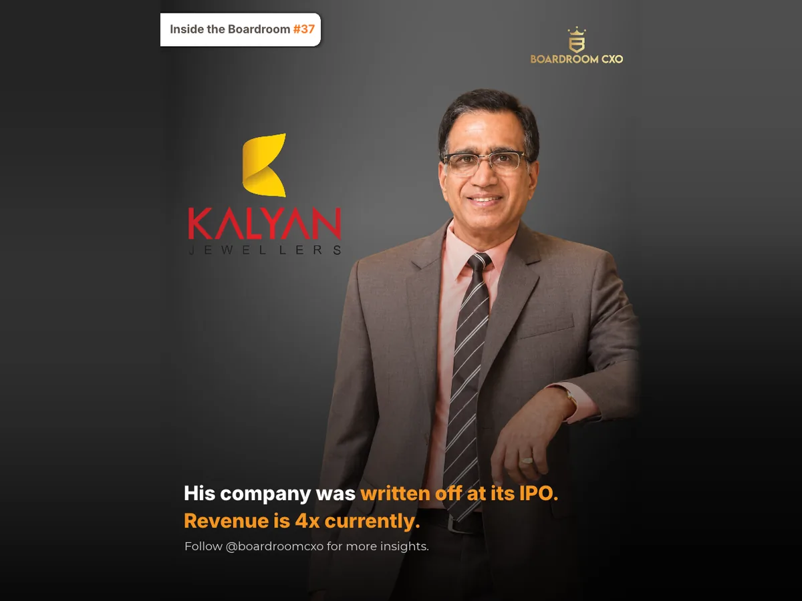

Key Takeaways
- Kalyan Jewellers listed on 26 March 2021 at ₹73.95, about 15 per cent below its ₹87 issue price, after FY21 revenue fell 15 per cent to ₹8,573 crore and the company posted a net loss of about ₹6 crore.
- Founder T S Kalyanaraman sped up through a franchise-owned, company-operated model, opening the first such showroom in Aurangabad in June 2022 and targeting 52 showrooms in 52 weeks for 2023, mostly outside South India.
- By 30 September 2026, Kalyan ran 407 Kalyan showrooms, almost three times the 137 at its IPO, plus 138 Candere stores, and FY26 revenue reached ₹35,743 crore with a profit of ₹1,350 crore.
Kalyan Jewellers was written off on its first day as a listed company. Its founder answered by opening more showrooms with other people's money.
On 26 March 2021, Kalyan Jewellers India listed on the stock exchanges. The shares opened at ₹73.95 on the NSE, about 15 per cent below the ₹87 issue price.
Five years later, the company was more than four times bigger.
Why Kalyan Jewellers' IPO Fell Flat
The timing could hardly have been worse. Covid cases were rising again in India as the shares listed, and investors had just watched a year of shut stores.
The numbers behind the IPO were weak. In FY21, Kalyan's revenue from operations fell 15 per cent to ₹8,573 crore. The company ended the year with a consolidated net loss of about ₹6 crore, against a profit of ₹143 crore a year earlier. It blamed the lockdown months and a one-time write-off of about ₹100 crore in its Middle East business.
Jewellery retail also eats capital. Every new showroom needs crores of rupees in gold on the shelves. For a company that had just reported a loss, fast growth looked expensive.
Who Is T S Kalyanaraman?
T S Kalyanaraman is the founder, Chairman and Managing Director of Kalyan Jewellers. He was born in 1947 and started working at 12, helping in his father's textile shop in Thrissur, Kerala.
In 1993, he opened the first Kalyan Jewellers showroom in Thrissur. He put in his own savings of about ₹25 lakh and borrowed ₹50 lakh from a bank.
By the time of the IPO, the business had grown to 137 showrooms, 107 in India and 30 in the Middle East. His sons, Rajesh and Ramesh Kalyanaraman, work alongside him as Executive Directors.
The Kalyan Jewellers Franchise Model: Growth With Other People's Money
After a loss year and a weak listing, the safe path was to slow down. Hold cash, cut the opening plan, and wait for the market to come back.
Kalyan chose to speed up. The question was how to do it without borrowing heavily for gold and store fit-outs.
The answer was a franchise model built for jewellery. Under what the company calls FOCO, franchise-owned and company-operated, a local partner puts up the money for the showroom and the stock. Kalyan runs the store under its own name, with its own staff and standards. In February 2022, the company said each such store would cost around ₹20 crore, mostly in inventory.
The first franchise-owned Kalyan showroom opened in Aurangabad in June 2022.
Then the company set a public target. In December 2022, it announced plans to open 52 showrooms in 52 weeks during 2023, expanding its Indian retail footprint by over 30 per cent. Most were planned outside the South, in the north, east and west, far from the Kerala market that had built the brand. The non-South region then made up about 35 per cent of its India business.
What the Franchise Bet Delivered
Investors noticed quickly. By December 2022, Business Standard reported the stock at its highest level since listing, about 41 per cent above the ₹87 issue price.
The showroom count kept climbing. By 30 September 2026, Kalyan ran 407 Kalyan showrooms: 365 in India, 38 in the Middle East, two in the US and two in the UK. That is almost three times the count at the IPO. On top of that, it ran 138 Candere showrooms, its lighter jewellery brand.
The financials followed the stores:
- Revenue. FY26 consolidated revenue was ₹35,743 crore, up 43 per cent on FY25 and more than four times FY21.
- Profit. FY26 consolidated profit after tax was ₹1,350 crore, up 86 per cent, against a loss of about ₹6 crore in FY21.
- Growth that kept going. In the July to September 2026 quarter, the company's business update reported consolidated revenue growth of over 26 per cent.
The company that was sold below its issue price on day one now runs one of the largest jewellery chains in India.
The Boardroom Lesson: A Weak IPO Is an Opinion, Not a Verdict
A listing price tells you what the market thought of a company on one day. It does not tell you what the founder will do next. Kalyanaraman's response to a bad start was to find a way to grow faster without stretching the balance sheet.
Being written off is an opinion. Staying small after it is a choice.
The franchise model was the key. It let Kalyan add showrooms in new regions while partners carried much of the capital, and the brand stayed in the company's hands.
Common Mistakes Boards Make After a Weak Listing
Boards of newly listed companies that disappoint on debut tend to make the same three errors.
They manage for the share price. Cutting growth plans to look safe can calm one quarter of trading. It can also lock in the low valuation for years.
They assume growth must come from their own balance sheet. Kalyan's franchise model showed that capital-heavy retail can grow through partners, if the company keeps control of the brand and operations.
They stay close to home. Expanding where the brand is already strong feels safe. Kalyan's growth came from moving into regions where it was still a newcomer.
A Framework for Leading Growth After a Disappointing IPO
When we brief boards on a leadership search for a retail business after a difficult listing, we push for three specific checks.
- Look for leaders who have grown through partners. Running franchise or partner-funded stores well is a distinct skill. It needs people who can protect standards in a store the company does not own.
- Hire for the new regions, not the home market. Leaders who have built a brand in markets where it was unknown are worth more than those who only ran its strongholds.
- Set a public, countable target. Kalyan's 52 showrooms in 52 weeks gave staff, partners and investors one number to track. Boards should agree that number with the leader before the plan starts.
Why This Belongs in the Boardroom, Not Just the Business Pages
This story sits beside two other jewellery leaders we have written about: M P Ahammed at Malabar Gold, who built India's largest jeweller from a small start in Kerala, and C K Venkataraman at Tanishq, who had to learn what Indian buyers really wanted. Kalyan's path was different: it grew fastest after the market had decided it would not.
The listing price is the market's first guess. The founder writes the rest.
Sources
- Business Today, Kalyan Jewellers makes weak debut, lists at 15% discount on BSE, March 2021
- Business Standard, Kalyan Jewellers Q4 PAT up 54% YoY, May 2021
- FashionNetwork, Kalyan Jewellers to take franchise route to accelerate expansion, February 2022
- Kalyan Jewellers, Kalyan Jewellers targets to open 52 showrooms in 52 weeks in calendar year 2023, December 2022
- Business Standard, Kalyan Jewellers hits new high on expansion plans; stock up 14% in 3 days, December 2022
- GJEPC Solitaire, Kalyan Jewellers Reports 43% Revenue Growth in FY26, May 2026
- Business Today, Kalyan Jewellers share price in focus as Q2 revenue jumps 26%, store additions, SSSG, October 2026
Related Reading
M P Ahammed: How a Coconut Trader Built India's Largest Jeweller
Read → R · 02 Founder Leadership · August 2026C K Venkataraman: How Tanishq Fixed Years of Being Wrong About India
Read → R · 03 Founder Leadership · September 2026Gaurav Singh Kushwaha: BlueStone's First Profit Came Without a Turnaround
Read →Expanding a retail brand into new regions or through franchise partners?
We screen for retail and business heads who have grown stores through partners and built a brand where it was unknown, not only those who ran its home market. Brief us on the mandate and we will show you who the market really has.
Brief Us on a Mandate See all Sales & Retail roles we fill →